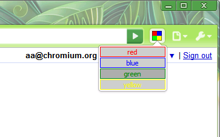

Except as otherwise noted, the content of this page is licensed under the Creative Commons Attribution 3.0 License, and code samples are licensed under the BSD License.
©2011 Google
Use browser actions to put icons in the main Google Chrome toolbar, to the right of the address bar. In addition to its icon, a browser action can also have a tooltip, a badge, and a popup.
In the following figure, the multicolored square to the right of the address bar is the icon for a browser action. A popup is below the icon.
If you want to create an icon that isn't always visible, use a page action instead of a browser action.
Note: Packaged apps cannot use browser actions.
Register your browser action in the extension manifest like this:
{
"name": "My extension",
...
"browser_action": {
"default_icon": "images/icon19.png", // optional
"default_title": "Google Mail", // optional; shown in tooltip
"default_popup": "popup.html" // optional
},
...
}
A browser action can have an icon, a tooltip, a badge, and a popup.
Browser action icons can be up to 19 pixels wide and high. Larger icons are resized to fit, but for best results, use a 19-pixel square icon.
You can set the icon in two ways: using a static image or using the HTML5 canvas element. Using static images is easier for simple applications, but you can create more dynamic UIs — such as smooth animation — using the canvas element.
Static images can be in any format WebKit can display, including BMP, GIF, ICO, JPEG, or PNG.
To set the icon, use the default_icon field of browser_action in the manifest, or call the setIcon() method.
To set the tooltip, use the default_title field of browser_action in the manifest, or call the setTitle() method. You can specify locale-specific strings for the default_title field; see Internationalization for details.
Browser actions can optionally display a badge — a bit of text that is layered over the icon. Badges make it easy to update the browser action to display a small amount of information about the state of the extension.
Because the badge has limited space, it should have 4 characters or less.
Set the text and color of the badge using setBadgeText() and setBadgeBackgroundColor(), respectively.
If a browser action has a popup, the popup appears when the user clicks the icon. The popup can contain any HTML contents that you like, and it's automatically sized to fit its contents.
To add a popup to your browser action, create an HTML file with the popup's contents. Specify the HTML file in the default_popup field of browser_action in the manifest, or call the setPopup() method.
For the best visual impact, follow these guidelines:
You can find simple examples of using browser actions in the examples/api/browserAction directory. For other examples and for help in viewing the source code, see Samples.
Sets the background color for the badge.
[255, 0, 0, 255].Sets the badge text for the browser action. The badge is displayed on top of the icon.
Sets the icon for the browser action. The icon can be specified either as the path to an image file or as the pixel data from a canvas element. Either the path or the imageData property must be specified.
canvas element).Sets the html document to be opened as a popup when the user clicks on the browser action's icon.
This function was added in version 5.0.316.0. If you require this function, the manifest key minimum_chrome_version can ensure that your extension won't be run in an earlier browser version.
Sets the title of the browser action. This shows up in the tooltip.
Fired when a browser action icon is clicked. This event will not fire if the browser action has a popup.